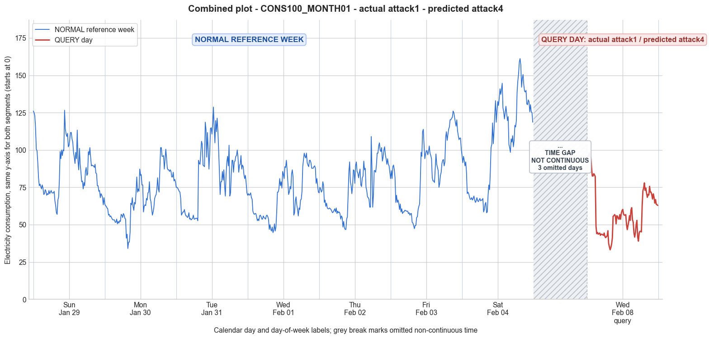

CONS100_MONTH01 · actual attack1 · predicted attack4
- Pair
- CONS100_MONTH01
- GT
- attack1
- Prediction
- attack4
- Binary GT
- attacked
- Binary Prediction
- attacked
- Source
- E010
- Parse
- stored
- Date
- 2012-02-08
- Weekday
- Wednesday
- Latency
- 1.62 min
- Tokens
- 8700

Final output
Classification: - Manipulated Identified Attack: - Most Likely: Attack 4 - Confidence: High - Reasoning: The query day exhibits a clear period of abnormally low consumption compared to the same weekday in the reference week. From approximately 03:00 (index 12) to 17:15 (index 69) the values are consistently reduced (e.g., 33–62 vs. typical 44–90), while early morning readings (00:00–03:00) are actually higher than normal. This matches Attack 4, where a randomly selected period within the observation window has all measurements reduced. Attack 1 (constant scaling) was ruled out because the reduction is not uniform across the whole day—early morning values are elevated, altering the trend. Attack 3 (random per-sample factor) was considered but the reduction appears systematic and sustained throughout the targeted period rather than randomly varying per sample. Attack_Behavior_Explanation: - How consumption values are manipulated relative to the normal week: A contiguous block of readings (roughly from 03:00 to late afternoon) has been lowered, likely by multiplying by a factor less than 1 for that period. The early morning segment (midnight to 03:00) remains unchanged or slightly elevated, preserving the overall shape outside the altered window but creating an abrupt drop. - Impact on magnitude and trend: The magnitude is significantly reduced within the attack period (mean of the query day falls from 69.80 to 58.42, with the minimum dropping to 33.19 vs. 44.68 in the reference). The trend is distorted: rather than a gradual decline and midday dip, the attack introduces a sudden drop and a prolonged low plateau, followed by a partial recovery in the evening. - Possible technical causes: Meter bypass, magnetic interference, reverse current, or false data injection—any method that allows selective reduction of readings over a chosen interval without affecting the whole day.
Prompt
You are a domain expert in smart grid security and electricity theft analysis, with deep knowledge of non-technical loss (NTL) attack patterns in smart meters. You are given: 1. A plot of one week of original (normal) energy consumption for a smart meter, provided as context for the customer's typical consumption behavior. 2. A plot of one day of energy consumption for the same smart meter, which may or may not be manipulated. Below are common attack types, each defined by how consumption values are altered, their impact on magnitude and trend, and their possible technical causes. Attack 0: Generated by replacing all electricity consumption samples with zero values for the entire observation duration. Simulates a scenario where no energy usage is reported at all. May be caused by a total meter bypass or severe meter malfunction. Completely eliminates both the trend and magnitude of the consumption profile. Attack 1: Multiplies the actual energy consumption by a constant random value between (0,1). The lower the factor, the higher the severity. Can be triggered by meter bypass, magnetic interference, reverse current, and false data injection. The consumption trend remains the same but the magnitude is uniformly reduced. Attack 2: Generated by replacing consumption samples with zeros for a random duration. Also known as an on-off attack. Can be caused by full meter bypass, false data injection, and reverse current. Changes both the trend and amplitude. Attack 3: The actual consumption is multiplied by different random factors between 0 and 1, with a unique factor per sample. Similar to Attack 1 but the scaling factor varies per reading. Caused by meter bypass, magnetic interference, and reverse current. Changes both the trend and amplitude. Attack 4: Simulates energy theft over a randomly selected period within the observation window. All measurements in that period are reduced. Caused by meter bypass, magnetic interference, reverse current, and false data injection. Changes both the trend and amplitude. Attack 5: Each sample is replaced by a false value obtained by multiplying the average normal consumption by a random variable between 0 and 1, with a different variable per sample. Caused by false data injection. Produces a completely different pattern from the original consumption profile, changing both trend and magnitude. Attack 6: A random cut-off point is selected and all consumption values above it are replaced by that cut-off value. The attacker avoids exceeding a predefined maximum limit. Mainly caused by false data injection. Changes both the trend and amplitude. Attack 7: A random cut-off point is subtracted from each sample; if the result is negative, zero is reported. Similar to Attack 6 but replaces exceeding values with zero instead of the cut-off point. May be caused by false data injection or total meter bypass. Does not change the trend but reduces overall consumption. Attack 9: All samples are replaced by the average daily energy consumption, resulting in a flat constant profile. Easily detectable because constant consumption does not reflect normal customer behavior. Caused by false data injection. Eliminates all trends. Attack 10: Reverses the consumption pattern without reducing the total amount. Applicable when the electricity company uses time-varying pricing, allowing the attacker to shift high consumption to off-peak periods. Caused by false data injection. Changes the trend without decreasing total consumption. Attack 12: The attacker replaces their consumption pattern with that of a lower-consuming user. The legitimate user unknowingly pays the adversary's electricity bill. Caused by false data injection. Attack IEEE: For each 15-minute interval across the entire day, the consumer either reports the actual electricity consumption or substitutes it with zero. The result is a profile where some intervals reflect real consumption while others are zeroed out, creating an irregular pattern across the full day. May be caused by false data injection. Changes both the trend and amplitude. Given the two plots, determine: 1. Whether the day is attacked or original - compare the flagged day against the normal week and assess whether the consumption pattern is consistent with normal behavior or shows signs of manipulation. If the day is consistent with the customer's typical consumption behavior, classify it as original and provide no further analysis. If manipulation is detected, proceed to point 2. 2. Which attack type this most likely is - identify the single most probable attack and justify your choice based on how the flagged day deviates from the normal week. 3. The behavior of the identified attack - explain how the consumption values are manipulated, their impact on magnitude and trend, and the possible technical causes behind this type of attack. Output Format: Classification: - Original | Manipulated Identified Attack: (fill only if manipulated) - Most Likely: Attack X - Confidence: High | Medium | Low - Reasoning: Why it matches Attack X and why Attack Y and Attack Z were ruled out (list top 2 alternatives considered) Attack_Behavior_Explanation: (fill only if manipulated) - How consumption values are manipulated relative to the normal week - Impact on magnitude and trend - Possible technical causes
Reasoning content
We are asked to determine if the query day (DAY_ID=3) is original or manipulated, by comparing it to the reference week. The query day data is provided. We need to output Classification, Identified Attack if manipulated, and Attack_Behavior_Explanation. First, examine the reference week statistics: the query day is DAY_ID=3. But the reference week includes a Day 3 (which is from the week before? Actually the metadata: CONS_NO=100, MONTH_ID=1, WEEK_ID=1, DAY_ID=3 for the reference? The query day is also DAY_ID=3 but with cal_month=2, dow=2, dom=10. The reference week has days 0-6 with cal_month=1 and 2. Day 3 of reference week has cal_month=2, dow=2, dom=3. The query day has same cal_month=2, dow=2 (Wednesday), but dom=10. So it's a different Wednesday (a week later? It is one week later, since dom 3 to 10 is 7 days). So it's the same weekday, one week later. Perfect for comparison. Reference week day 3 stats: min=44.68, max=97.87, std=15.39, mean=69.80. Query day stats: min=33.19, max=98.02, std=16.10, mean=58.42. The min is lower (33.19 vs 44.68), max is similar (98.02 vs 97.87), std similar (16.10 vs 15.39), mean lower (58.42 vs 69.80). The mean is about 16% lower. The shape: looking at the query day data, it starts high around 94-95, then drops to around 33-45, then recovers to 55-60, then later around 60-75 range, and ends around 63. The reference day 3 data: starts around 69-70, drops to lows around 44-52, then goes up to 58-73, later peaks around 97-88 range. The query day has a different pattern: it has a morning high (94-88) then a sudden drop at interval ~12 (reading index 12? The data has 96 readings, so 15-min intervals. The reading 0 is 94.93, reading 11 is 82.20, reading 12 is 49.01, a big drop. Why? The reference day 3 also has a morning, but its values are lower. Reference day 3: reading 0: 69.68, reading 11: 52.66? Actually let's check: Reference day 3 values: first few: 69.68, 70.74, 69.68, 70.21, 71.28, 68.09, 67.02, 59.04, 57.45, 56.91, 57.45, 57.45, 55.32, 52.66, 53.72, 52.66, 55.85, 56.38... So it gradually declines, no sudden drop. Query day: from reading 11 (82.20) to reading 12 (49.01) is a drop of 33.19. That's suspicious. Also, the query day has a low of 33.19 at reading 31 (index 31: 33.19). Reference day 3 lowest is 44.68 at reading 34? Actually reference day 3: min=44.68 at some point. Query day has lower min. Now, compare the overall shape: The reference week day 3 has a typical pattern: higher in morning, dip in midday, rise again in evening. Query day: high in very early morning (94-98), then a sharp drop to ~49 at 3:00 AM? Actually 96 readings, 15-min intervals, so 24 hours. Reading 0 = midnight. So earliest morning. Reference day 3: starts at 69.68, goes down. Query day: starts at 94.93, really high for midnight. That is unusual compared to reference days where midnight is around 69-70 for day 3, and around 80s for some other days. But day 3 of reference starts at 69.68, day 0 starts at 126.06, day 1: 63.83, day 2: 75.00, day 4: 71.28, day 5: 80.85, day 6: 96.28. So there is variability. The query day midnight value of 94.93 is high but not impossible. The sudden drop to 49 at reading 12 (3:00 AM) is suspicious: from 82.20 to 49.01 in one step. Then it remains low (42-49) until about reading 35 (8:45 AM) where it rises to 55.57. Then it fluctuates around 50-60 until reading 68 (17:00) where it goes up to 62.13, then to 72.55, peaks around 77.95. So it has a morning low period but the drop is too abrupt and the low values are very low. This looks like an attack where some periods are zeroed or reduced? Attack 2: replacing consumption samples with zeros for a random duration. But here no zeros, it's just lowered. Attack 3: multiplying by different random factors per sample. Could be, but the sudden drop and then flat low values look more like Attack 4: energy theft over a randomly selected period where measurements are reduced. Attack 4: "Simulates energy theft over a randomly selected period within the observation window. All measurements in that period are reduced." That fits: a period from around reading 12 to maybe reading 35 is reduced (the low values). The reduction factor could be around 0.5-0.6 compared to typical values. The reference day 3 during similar times: let's check reference day 3 around reading 12-35. Reference day 3 readings (0-95): index 0-11: 69.68, 70.74, 69.68, 70.21, 71.28, 68.09, 67.02, 59.04, 57.45, 56.91, 57.45, 57.45. So at index 11, it's 57.45. Query index 11 is 82.20, much higher. But then reference index 12: 55.32, query index 12: 49.01 (lower). Reference index 13: 52.66, query 13: 43.99 (lower). So the query day is lower by about 10-20 units during that period. The reduction seems consistent across that period. Attack 4 is plausible. Attack 1: multiplies by a constant random value. That would scale the whole day by a factor, so the shape remains the same. Here, the shape is different: early morning is even higher than reference day, and the low period is lower. So not constant scaling. Attack 2: on-off attack (zeros for random duration). No zeros here, so not Attack 2. Attack 3: random factor per sample. Could be, but the low period seems consistently reduced, not random per sample. Attack 5: false values from average consumption multiplied by random per sample. That would give completely random values, not the pattern seen here. Attack 6: cut-off above a value. The max is similar, so if cutoff were, say, 98, it would affect few values. But the low values are reduced, not capped. Attack 7: cut-off subtracted, if negative zero. That would not produce a flat low period. Attack 9: constant flat. Not constant. Attack 10: reversed pattern. Not reversed. Attack 12: replaced by lower-consuming user's pattern. Could be, but the pattern looks like a shifted down version of a typical day, not a completely different user. Attack IEEE: for each 15-min interval, either actual or zero. No zeros, so no. Thus, Attack 4 seems the best match: a period of time (the early morning hours) is reduced. The reduction is not to zero, but to lower values. Attack 4 says "All measurements in that period are reduced." That matches: the period from roughly index 12 to 35 (maybe even up to index 67? Actually the low period extends until index 67? Let's check: after index 35 (8:45), readings 36: 55.96, 37: 56.73, 38: 55.96, 39: 50.55, 40: 55.96, 41: 55.57, 42: 54.03, ... up to 58: 59.82, 59: 61.36, 60: 53.26, 61: 51.71, 62: 44.38, 63: 41.68, 64: 44.77, 65: 50.17, 66: 52.87, 67: 41.68, 68: 38.98, 69: 44.38, ... 70: 45.54, 71: 45.54, 72: 45.15, 73: 62.13... So the low period maybe from index 12 to 72, with some variability. Reference day 3 during that time: index 12-72 roughly: 55.32, 52.66, 53.72, 52.66, 55.85, 56.38, 55.32, 53.72, 53.72, 55.85, 54.79, 54.26, 53.72, 55.85, 56.38, 55.32, 53.72, 46.81, 50.00, 46.81, 45.74, 48.40, 44.68, 46.28, 50.53, 45.74, 48.40, 58.51, 71.81, 71.81, 73.94, 80.85, 76.06, 78.72, 74.47, 85.64, 83.51, 80.85, 88.83, 88.30, 93.09, 86.70, 78.19, 70.21, 71.81, 75.53, 73.94, 84.04, 86.70, 81.91, 56.38, 57.98, 65.96, 68.62, 63.30, 60.11, 55.85, 61.17, 60.11, 66.49, 67.02, 72.34. So reference values are mostly 50-90, with some dips. Query values are mostly 33-62, significantly lower. So indeed a period reduction. Thus Attack 4 is most likely. Confidence: High, because the pattern shows a clear period where consumption is abnormally low compared to the reference week for the same weekday, and it's not a simple scaling or zeroing. Reasoning: Attack 4 matches because a specific period (roughly early morning to late afternoon) shows consistently reduced consumption values relative to the normal week for that day. The shape outside that period (late evening) appears more normal, though still a bit lower? Actually late evening from index 73 onward: query 62.13 to 62.90, reference from index 73 onward: 72.34, 88.83, 93.62, 97.87... So query evening is much lower too. So maybe the reduction applies to the entire day except the very early morning? Actually the early morning (0-11) query has values 94-82, which are higher than reference (69-57). So it's not a simple period reduction; the early morning is actually higher. That might indicate the reduction period starts after midnight? Attack 4 says "over a randomly selected period within the observation window. All measurements in that period are reduced." It could be that the attack selected period from around index 12 to end of day, and reduced those, while the first few readings are untouched or even higher (maybe due to normal variability or because the attacker reduced later period). That is plausible. So Attack 4 still best. Alternatives: Attack 1 (constant scaling) ruled out because the shape changed: some values higher, some lower. Attack 3 (random factor per sample) could produce a lowered period, but the reduction appears consistently lower rather than randomly varying around a factor. However, Attack 4 is a better fit because it specifically describes a period-based reduction. So I'll classify as Manipulated, Attack 4, and explain.